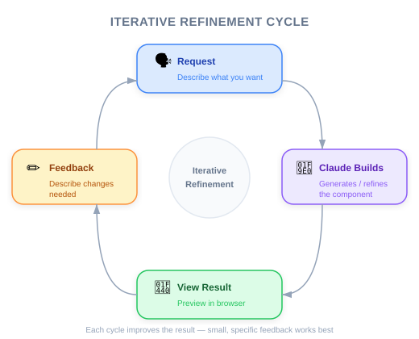

| Item | Details |
|---|---|
| Exam Coverage | D2 — Tool Design & MCP Integration (18%), D3 — Effective Claude Code Usage (30%) |
| Task Statements | 2.5 (built-in tools — awareness), 3.5 (iterative refinement — intro) |
| Course Source | claude-code-in-action / 02-getting-started / Lesson 06 (text-only) |

The course uses a small Node.js app that generates UI components via Claude's API. PMs should understand: (1) the project demonstrates how Claude Code works with real codebases, (2) it has an optional API key — meaning the tool works even without external API access, and (3) the iterative generate-review-refine workflow it introduces is how teams actually use Claude Code in practice.
| Concept | Business Analogy |
|---|---|
| Demo project with optional API | Like a freemium SaaS — core features work without payment, premium features need a key |
npm run setup one-time init |
Like onboarding setup in an enterprise tool — run once, then start working |
| Iterative UI generation | Like design sprints — show prototype, get feedback, refine, repeat |
Your VP of Engineering asks: "What does Claude Code actually do with our code?"
Using the demo project as a reference:
| Step | What Happens | Business Impact |
|---|---|---|
| 1. Developer asks Claude to build a feature | Claude reads the project structure and relevant files | No pre-indexing needed; works on any codebase from day one |
| 2. Claude generates implementation | Code is written directly in the project files | No copy-paste from a separate chat window |
| 3. Developer reviews in browser | The app reflects changes immediately | Feedback loop is seconds, not hours |
| 4. Developer provides refinement feedback | Claude iterates on the implementation | Converges on the right solution through dialogue |
Your CFO asks whether the team needs Anthropic API keys for every developer to use Claude Code. Based on this lesson, what is the correct answer?